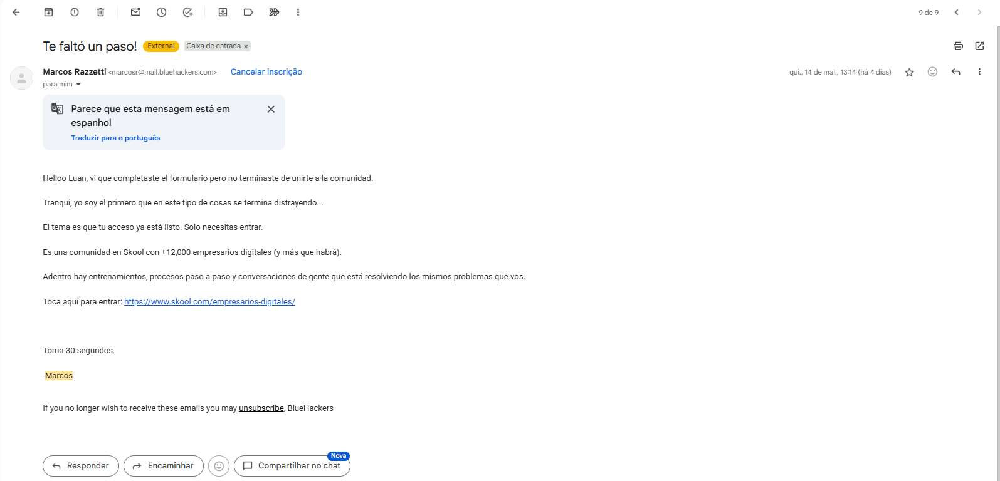

📷 Print original — clique pra abrir em tamanho real
Helloo Luan, vi que completaste el formulario pero no terminaste de unirte a la comunidad.
Tranqui, yo soy el primero que en este tipo de cosas se termina distrayendo...
El tema es que tu acceso ya está listo. Solo necesitas entrar.
Es una comunidad en Skool con +12,000 empresarios digitales (y más que habrá).
Adentro hay entrenamientos, procesos paso a paso y conversaciones de gente que está resolviendo los mismos problemas que vos.
Toca aquí para entrar: https://www.skool.com/empresarios-digitales/
Toma 30 segundos.
-Marcos
O que ele faz aqui
- Se coloca como igual: "eu sou o primeiro que se distrai nesse tipo de coisa". Tira a tensão e mostra que ele é par, não vendedor.
- Tamanho como argumento: "+12.000 empresários digitais". Antes de pedir qualquer coisa, mostra que a comunidade é grande.
- Promete fricção zero: "leva 30 segundos". A oferta é só entrar, não preencher nada ainda.
- Ainda não cobra o formulário. Esse email só ativa. O pedido do formulário vem 50 minutos depois.